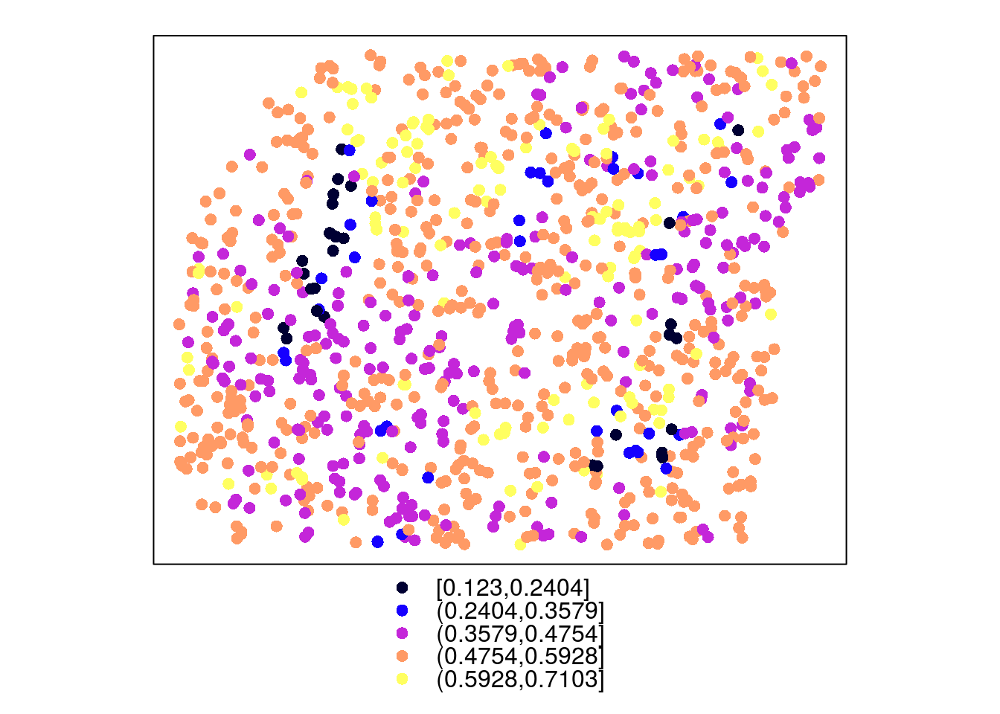
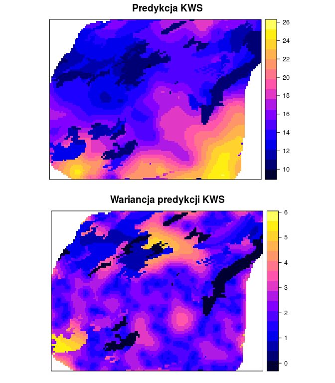
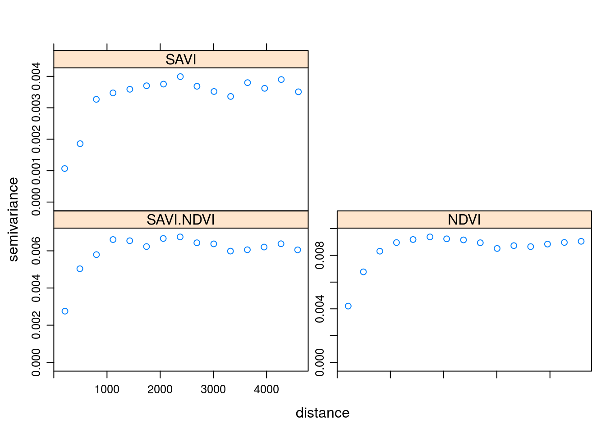
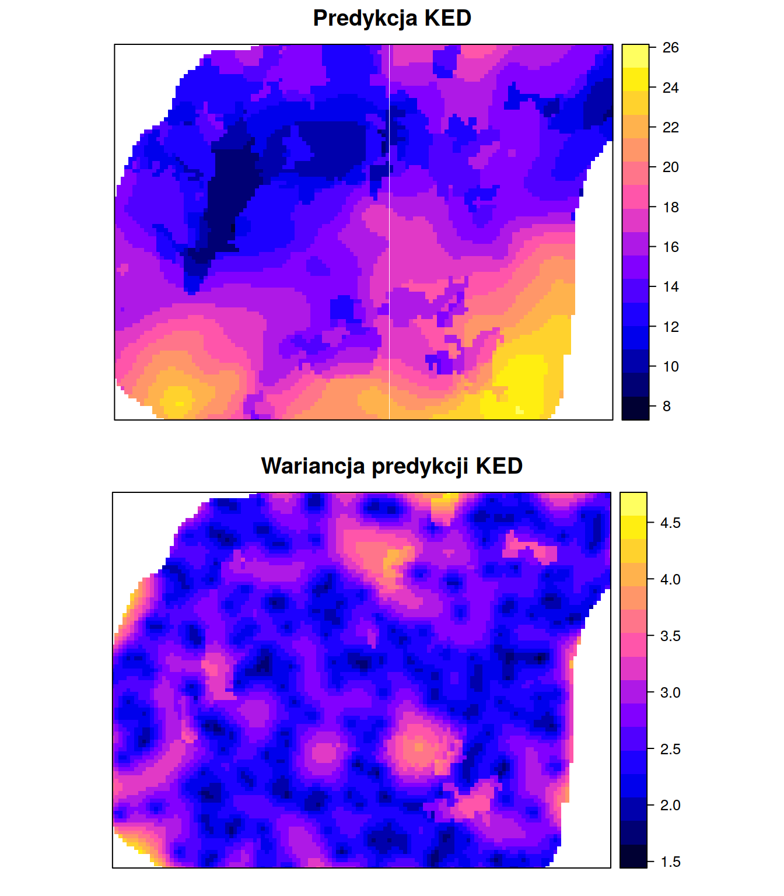

Rodział 11 Wykorzystanie do estymacji danych uzupełniających
library('geostatbook')
data(punkty)
data(siatka)11.1 Kriging stratyfikowany
11.1.1 Kriging stratyfikowany (ang. Kriging within strata)
- Zakłada on, że zmienność badanego zjawiska zależy od zmiennej jakościowej (kategoryzowanej)
- Przykładowo, zróżnicowanie badanej zmiennej jest różne w zależności od pokrycia terenu
- Kriging stratyfikowany wymaga posiadania danych zmiennej jakościowej (kategoryzowanej) na całym badanym obszarze
siatka$clc <- as.factor(siatka$clc)
spplot(siatka, 'clc')
vario_kws1 <- variogram(temp~1, punkty[punkty$clc==1, ])
plot(vario_kws1)
fitted_kws1 <- fit.variogram(vario_kws1, vgm(10, model = 'Sph', range = 4500, nugget = 0.5))
plot(vario_kws1, fitted_kws1)
vario_kws2 <- variogram(temp~1, punkty[punkty$clc==2, ])
plot(vario_kws2)
fitted_kws2 <- fit.variogram(vario_kws2, vgm(5, model = 'Gau', range = 4500, nugget = 0.1))
plot(vario_kws2, fitted_kws2)
vario_kws4 <- variogram(temp~1, punkty[punkty$clc==4, ])
plot(vario_kws4)
fitted_kws4 <- fit.variogram(vario_kws4, vgm(0.5, model = 'Nug', range = 0))
plot(vario_kws4, fitted_kws4)
kws1 <- krige(temp~1, punkty[punkty$clc==1, ], siatka[na.omit(siatka$clc==1), ], model = fitted_kws1, nmax = 50)## [using ordinary kriging]kws2 <- krige(temp~1, punkty[punkty$clc==2, ], siatka[na.omit(siatka$clc==2), ], model = fitted_kws2, nmax = 50)## [using ordinary kriging]kws4 <- krige(temp~1, punkty[punkty$clc==4, ], siatka[na.omit(siatka$clc==4), ], model = fitted_kws4, nmax = 50)## [using ordinary kriging]kws <- rbind(as.data.frame(kws1), as.data.frame(kws2), as.data.frame(kws4))
coordinates(kws) <- ~x+y
kws <- as(kws, 'SpatialPixelsDataFrame')spplot(kws, 'var1.pred', sp.layout=punkty)
spplot(kws, 'var1.var', sp.layout=punkty)
11.2 Prosty kriging ze zmiennymi średnimi lokalnymi (LVM)
11.2.1 Prosty kriging ze zmiennymi średnimi lokalnymi (LVM)
- Prosty kriging ze zmiennymi średnimi lokalnymi zamiast znanej (stałej) stacjonarnej średniej wykorzystuje zmienne średnie lokalne uzyskane na podstawie innej informacji
- Lokalna średnia może być uzyskana za pomocą wyliczenia regresji liniowej pomiędzy zmienną badaną a zmienną dodatkową
coef <- lm(temp~srtm, punkty)$coef
coef## (Intercept) srtm
## 17.506469957 -0.007291269vario <- variogram(temp~srtm, punkty)
model_sim <- vgm(10, model = 'Sph', range = 4000, nugget = 1)
model_sim## model psill range
## 1 Nug 1 0
## 2 Sph 10 4000fitted_sim <- fit.variogram(vario, model_sim)
fitted_sim## model psill range
## 1 Nug 0.7705839 0.000
## 2 Sph 13.1155524 5474.628plot(vario, model=fitted_sim)
sk_lvm <- krige(temp~srtm, punkty, siatka, model=fitted_sim, beta = coef)## [using simple kriging]summary(sk_lvm)## Object of class SpatialPixelsDataFrame
## Coordinates:
## min max
## x 745586.7 756926.7
## y 712661.2 721211.2
## Is projected: TRUE
## proj4string :
## [+init=epsg:2180 +proj=tmerc +lat_0=0 +lon_0=19 +k=0.9993
## +x_0=500000 +y_0=-5300000 +ellps=GRS80 +towgs84=0,0,0,0,0,0,0
## +units=m +no_defs]
## Number of points: 10993
## Grid attributes:
## cellcentre.offset cellsize cells.dim
## s1 745586.7 90 127
## s2 712661.2 90 96
## Data attributes:
## var1.pred var1.var
## Min. : 9.098 Min. :1.108
## 1st Qu.:13.215 1st Qu.:1.931
## Median :15.237 Median :2.241
## Mean :15.864 Mean :2.312
## 3rd Qu.:18.049 3rd Qu.:2.637
## Max. :25.240 Max. :4.705
## NA's :43 NA's :43spplot(sk_lvm, 'var1.pred')
spplot(sk_lvm, 'var1.var')
11.3 Kriging uniwersalny (ang. Universal kriging)
11.3.1 Kriging uniwersalny (ang. Universal kriging)
- Określany również jako kriging z trendem (ang. Kriging with a trend model)
- Zakłada on, że nieznana średnia lokalna zmiania się stopniowo na badanym obszarze
punkty$clc <- as.factor(punkty$clc)
vario_uk1 <- variogram(temp~clc, punkty)
vario_uk1## np dist gamma dir.hor dir.ver id
## 1 127 204.2244 1.513128 0 0 var1
## 2 271 494.5572 3.120279 0 0 var1
## 3 522 798.7911 3.706435 0 0 var1
## 4 587 1112.7783 4.494623 0 0 var1
## 5 856 1428.7866 5.451369 0 0 var1
## 6 920 1743.7864 6.054877 0 0 var1
## 7 1068 2062.3041 6.140934 0 0 var1
## 8 1106 2378.9333 6.241295 0 0 var1
## 9 1184 2691.5206 7.665422 0 0 var1
## 10 1215 3011.7729 7.647765 0 0 var1
## 11 1362 3324.6705 7.973022 0 0 var1
## 12 1379 3642.5616 8.374149 0 0 var1
## 13 1405 3963.6776 8.681657 0 0 var1
## 14 1468 4276.0078 9.723868 0 0 var1
## 15 1482 4598.4144 11.789961 0 0 var1plot(vario_uk1)
model_uk1 <- vgm(8, model = 'Sph', range = 3000, nugget = 1)
vario_fit_uk1 <- fit.variogram(vario_uk1, model=model_uk1)
vario_fit_uk1## model psill range
## 1 Nug 1.261541 0.000
## 2 Sph 8.472224 4742.211plot(vario_uk1, vario_fit_uk1)
siatka$clc <- as.factor(siatka$clc)
spplot(siatka, 'clc')
uk1 <- krige(temp~clc, locations = punkty, newdata=siatka, model=vario_fit_uk1)## [using universal kriging]spplot(uk1, 'var1.pred')
spplot(uk1, 'var1.var')
vario_uk2 <- variogram(temp~ndvi+srtm, punkty)
vario_uk2## np dist gamma dir.hor dir.ver id
## 1 127 204.2244 1.324959 0 0 var1
## 2 271 494.5572 2.906522 0 0 var1
## 3 522 798.7911 3.964307 0 0 var1
## 4 587 1112.7783 5.058684 0 0 var1
## 5 856 1428.7866 6.088010 0 0 var1
## 6 920 1743.7864 7.331287 0 0 var1
## 7 1068 2062.3041 7.409558 0 0 var1
## 8 1106 2378.9333 8.222238 0 0 var1
## 9 1184 2691.5206 9.404511 0 0 var1
## 10 1215 3011.7729 9.495409 0 0 var1
## 11 1362 3324.6705 9.403714 0 0 var1
## 12 1379 3642.5616 11.182666 0 0 var1
## 13 1405 3963.6776 11.241615 0 0 var1
## 14 1468 4276.0078 13.783975 0 0 var1
## 15 1482 4598.4144 15.536012 0 0 var1plot(vario_uk2)
model <- vgm(8, model = 'Sph', range = 3000, nugget = 1)
vario_fit_uk2 <- fit.variogram(vario_uk2, model=model)
vario_fit_uk2## model psill range
## 1 Nug 0.8757491 0.000
## 2 Sph 13.3016445 5789.379plot(vario_uk2, vario_fit_uk2)
uk2 <- krige(temp~ndvi+srtm, locations = punkty, newdata=siatka, model=vario_fit_uk2)## [using universal kriging]spplot(uk2, 'var1.pred')
spplot(uk2, 'var1.var')